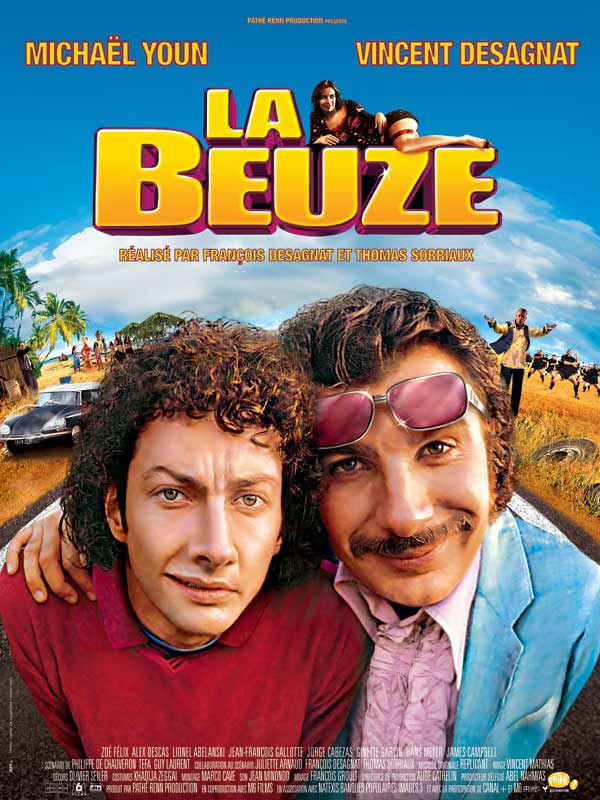
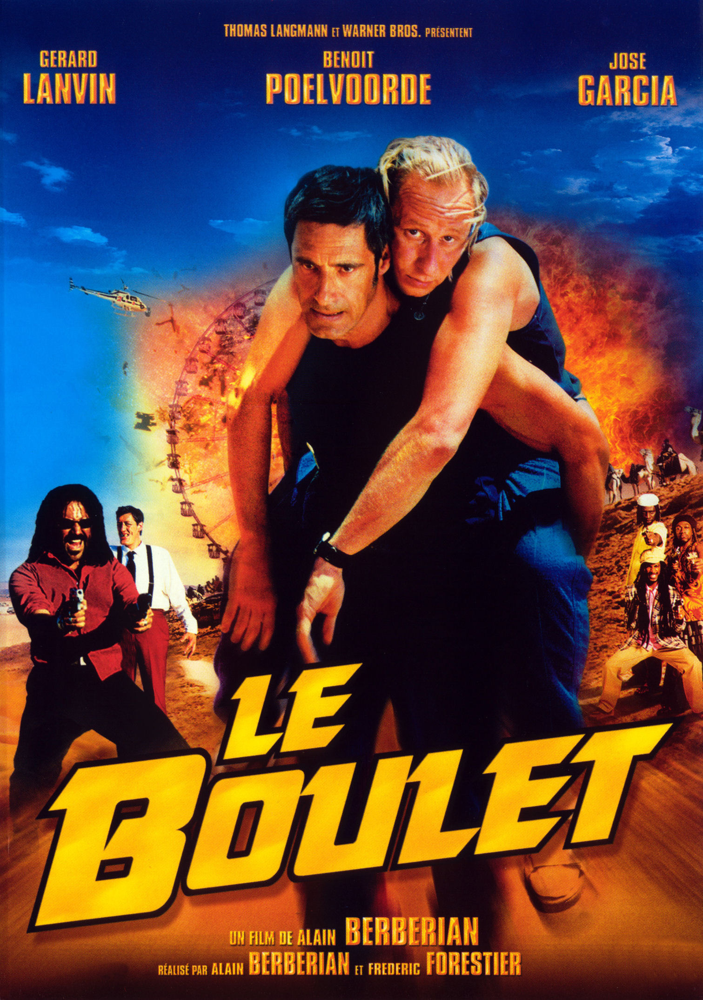
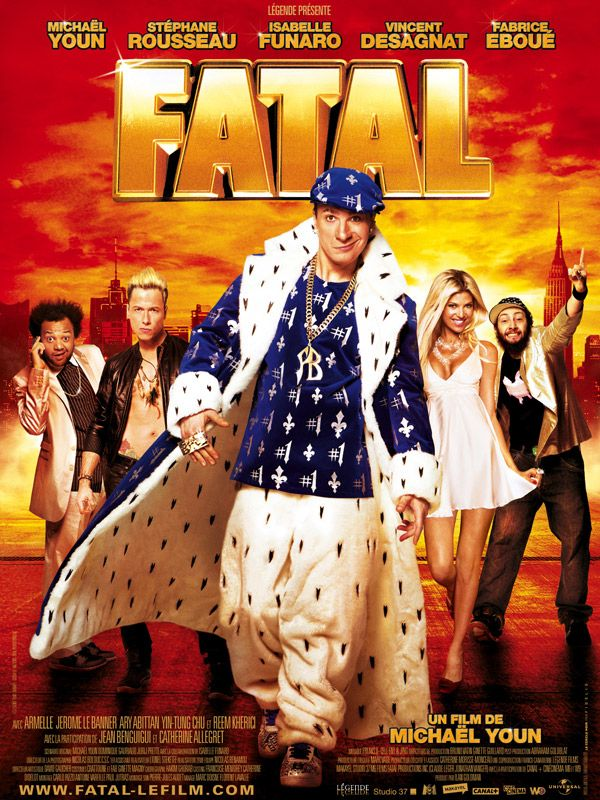

Fan de Boris Paillard et Sébastien Saunier since 2003.
Mon Skyblog sur Boris et Sébastien|  |
La BeuzeUn film dentesque ! Pour les puristes évidemment... A consommer sans modération, si tant est que vous aimiez les courses poursuites et autres cavalcades ! |
|  |
Le BouletMamène... Ce film il est pour toi. Que du quali. Tu le sais. Rage pas. |
|  |
FatalUn film d'art contemporain qui a fait scandale. Fatal a divisé par son aspect néo-gothique et son parti pris pour les prises de vues par drônes. A suivre... |